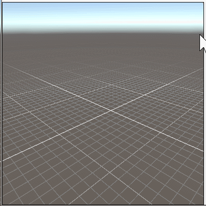

realtimeCSG
realtimeCSG

Evaluate
Version 1.522
UNITY 5.6 PACKAGE
UNITY 2017.1 PACKAGE
UNITY 2017.2 PACKAGE
UNITY 2017.3 PACKAGE
UNITY 2018.1 PACKAGE
Limited to 100 brushes
No source code / No API
Lightning fast level design & prototyping tool
When designing or prototyping levels you want to iterate often and get feedback fast You want to be able to easily change things without having to worry about the consequences, you never want to redo lots of work because you changed you mind, you want a non-destructive workflow. The last thing you want is wasting time working at the triangle/polygon level when you're still figuring things out! CSG allows you to focus on the design of the level and not have to worry about the details until you choose to
Intuitive workflow
Just drag in that prefabed door that you've created, including the hole for the door in the wall Don't like the placement of that door? Just move it in one motion and the hole will move with it Changed your mind? Just press delete, done! You can keep tweaking safely until the very end of your project CSG works with solid primitives, so you never have to worry about gaps in your geometry and your collision meshes will be created automatically

Modeling with brushes
With realtime CSG you can create your levels by combining brushes (simple primitives you can edit) that are either additive, subtractive or intersecting.
The hierarchy defines the shape
Conceptually, the final mesh is created by Realtime-CSG by going through the hierarchy from top to bottom, adding, subtracting or intersecting brushes with each other. All brushes are part of a model.

Draw your brushes
Simply hold V and create an outline by clicking in the scene. Release V and drag the center to extrude your 2D shape into a 3D brush. If you draw your outline on top of other brushes the newly generated shape will match the materials from that underlying brush.

Curved shapes
Double click on edges and vertices to toggle it between being a straight line and a curved line. Drag the handles around to control the shape of the curve

Create on any surface
You can create all the shapes on any surface. If you drag your shape into an existing surface it will automatically turn it into a subtractive brush for you. Creating doors and windows has never been easier.

Create cylinders
If you hold C instead, you can easily create cylinders. You can adjust all kinds of parameters in the helper menu that shows up while creating the cylinder. This allows you to set the radius, height of the cylinder box manually

Create boxes
If you hold B, you can draw boxes. You can adjust all kinds of parameters in the helper menu that shows up while creating the box. This allows you to set the width,height and depth of the box manually.
Quickly create stairs
Simply drag out the space the stairs need to occupy and adjust the slope. The step height can be edited manually and won't be modified by adjusting the slope, this way your step sizes remain under your control.

Drag your brushes
When you left click your mouse on a brush and then hold your mouse button while dragging, you can move your selected brushes around on the grid.

Drag copy support
If you hold D and then drag your brush, you will drag a copy of your brush instead.
Works well with prefabs
With realtime-CSG you can easily make prefabs that automatically update the scene when modified. When you drag & drop a prefab and drag it into the scene the prefab will automatically be placed on and rotate with the underlying geometry.
The model is your mesh
All the brushes belong to a model, which generates the final mesh that ends up in your game. All the brushes underneath it in the hierarchy will belong to this model, unless there's another model within the model. The settings on the model component allow you to define how this mesh will be behave in your game.
Export to fbx
If you prefer to do your finishing touches in your favorite DCC package you can export your CSG model to an FBX file. Your in scene CSG model will automatically be swapped with your exported mesh so that when you change the FBX, it'll be reflected in the scene. Don't worry, you will always have the option to revert back to the original CSG model. It's also possible convert your model to an Unity mesh directly instead.
Operations allow you to group things
The Operation component allows you to group brushes together and do CSG operations on more complicated shapes. You can group selected brushes underneath an operation by pressing Cmd/Ctrl-G.

Operations define sub-shapes
The operation component lets you define sub-shapes. In this case a cylinder minus another cylinder. These sub-shapes can then be added, removed or intersected with other parts of the model. Pass-through behaves as if there is no operation component.

Treat groups of brushes as a single object
If you want to group multiple brushes in one single object you can put them under an operation and check "select on child" in it's options. Now every time you select one of it's brushes you'll select the whole operation.

Deep clicking
If you need to select a brush on a position where multiple brushes overlap you can simply click multiple times to get the brush you want.

Snap to the grid
The grid visually shows you where your brushes will snap when you move them.
In local mode grid is relative to parent
If the parent of the brush you're moving is rotated, the grid will also be rotated when Unity is in local mode.

Edit your brushes
When in Edit-Mode you can easily move the vertices of your brush in any position you want them to be. You can delete selected vertices by pressing the Delete key on your keyboard.

Multi selection
You can also select multiple vertices or edges on multiple brushes and drag them together.

Move any surface
By dragging the green points you can move any surface where you want them to be. If you ALT-click on a surface dot instead you can extrude the polygon.

Move surface in its facing direction
If you drag your surfaces while pressing shift it'll move into the direction it's facing.
Rotate any surface
If the unity rotation tool is selected and you are in mesh mode, you can rotate the current edges/vertices and polygons.
Scale any surface
If the unity scale tool is selected and you are in mesh mode, you can scale the current edges/vertices and polygons.
Chamfer/bevel any vertex or edge
While in mesh mode, if you drag a vertex or edge while holding shift you will chamfer all selected vertices/edges.

Clip your brush
In clip-mode you can simply drag along a surface of a brush and all the selected brushes will be cut along the plane that is formed there.

Clip multiple brushes
If you select multiple brushes, all of these brushes will be clipped by the same plane.
Tweak your clipping
In the little helper menu in the bottom right corner of your view you can decide which side(s) of the plane needs to stick around and which side needs to be removed.

Rotate over edges
In both object-mode and mesh-mode, when you use select the unity rotate tool
 ,
you can rotate your brush by dragging the edge of the brush into a circle.
,
you can rotate your brush by dragging the edge of the brush into a circle.

Scale by dragging
In object-mode you can also scale your brushes by moving the sides of the bounding box around your brushes. Scale into a negative size allows you to mirror your selection
Multiple brushes at the same time
Just select the brushes you want to work with, and you can scale/rotate/move etc. them together.

Drag materials on surfaces
Just drag and drop the materials on the brush sides you want them to be on. If you selected multiple surfaces the material will be applied to all of them.

Copy and smear materials
In surface-mode, after you select a surface, you can press G onto another surface to copy your material to another surface. If you hold G and drag over multiple surfaces it'll make the texture coordinates flow over those surfaces. This even works when surfaces are not connected!
Select materials by dragging
In surface-mode you can select your surfaces by just dragging over them while holding control, shift or alt to remove/add surfaces from/to the selection.

Rotate materials
If Unity is in rotate mode
You can press your mouse where you want to rotate your texture coordinates around, pull and just rotate around it.
Move materials
If Unity is in move mode You can press your mouse and just drag your texture over the surface of your brush Note that the texture is also snapped to the grid if snapping is on and this may make it look like it's moving in a different direction, even though it's not.

Smooth between surfaces
If you want to smooth between multiple surfaces, just select them and press smooth in the surface-mode helper menu. Do you want them to be facetted instead? No problem, just press the un-smooth button.

Discard unnecessary surfaces
Sometimes you do not want certain surfaces to end up in your runtime, fortunately you can simply select and discard them.